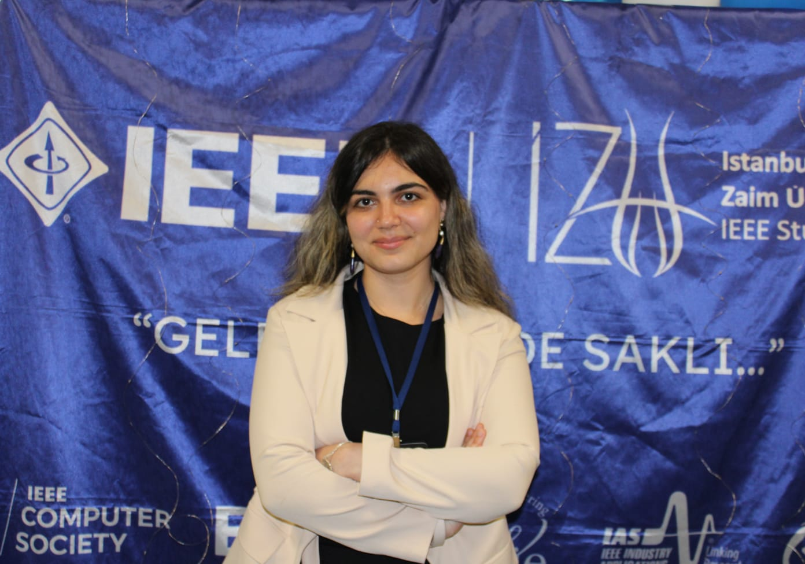
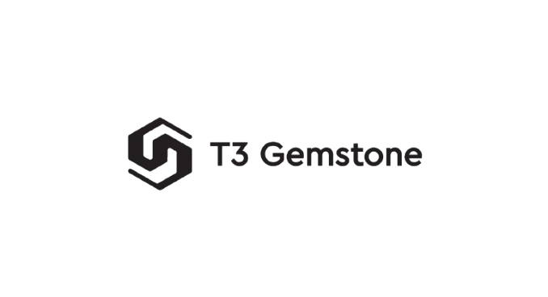
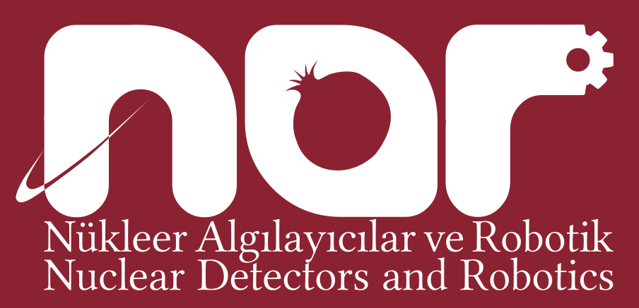

Robotik, otonom sistemler ve PCB tasarımı üzerine çalışan Elektrik-Elektronik Mühendisliği öğrencisiyim.

İstanbul Sabahattin Zaim Üniversitesi'nde Elektrik-Elektronik Mühendisliği okuyorum. Aynı zamanda Yönetim Bilişim Sistemleri eğitimime devam ediyorum. Donanım ve yazılımı birleştirerek gerçek dünya problemlerine çözümler üretmeyi seviyorum.

Buildroot ve ROS 2 mimarileri üzerine otonom sistem geliştirmeleri.

Nükleer algılayıcılar ve robotik uygulama araştırma merkezinde mühendislik projeleri yönetimi.
Görüntü İşleme ve Toprak Analizi
Gerçek zamanlı toprak verimliliği analizi ve bitki sağlığı tespiti yapan donanım/yazılım entegre sistem.
Otonom Su Altı Aracı
TEKNOFEST İnsansız Su Altı Sistemleri yarışması için mekanik, elektronik ve yazılım sistemlerinin tasarımı ve takım kaptanlığı.
Deneyimlerimin ve projelerimin tüm detaylarını içeren kapsamlı PDF özgeçmişimi aşağıdan inceleyebilirsiniz.
Özgeçmişimi İndir